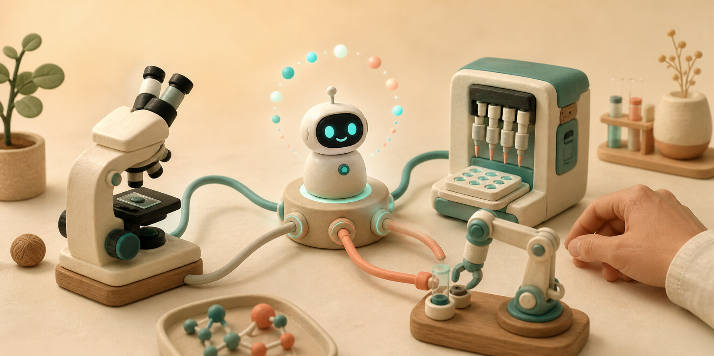
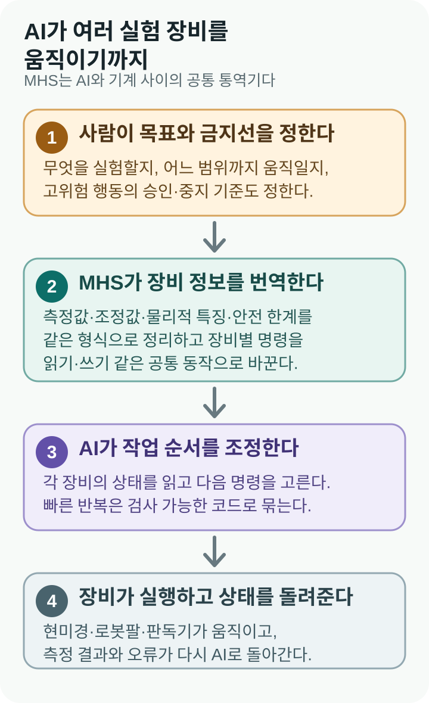
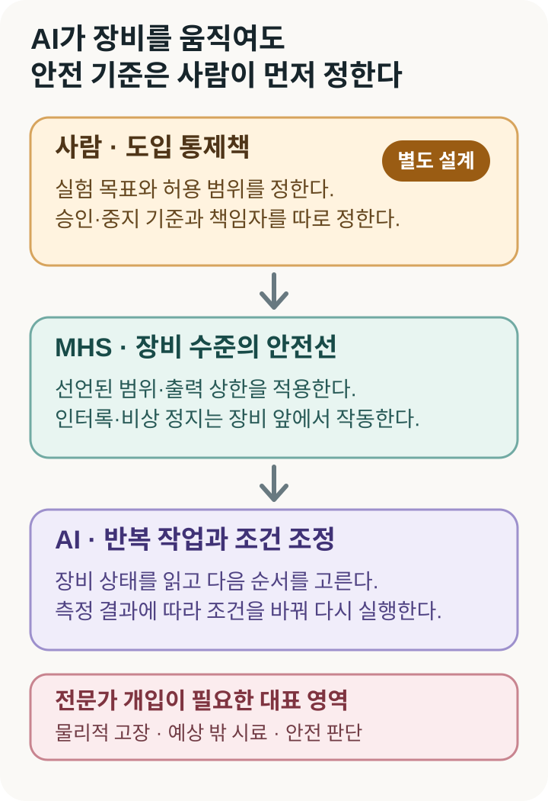

Anthropic, AI가 현미경과 로봇팔을 함께 움직이게 하는 공통 규칙 ‘MHS’ 공개
AI 기업 Anthropic이 8월 27일, 현미경·액체 처리 장비·로봇팔을 하나의 실험 순서로 연결하는 ‘모델 하드웨어 표준(MHS)’을 제한된 연구 프리뷰로 공개했다. 액체를 나누는 기계가 일을 끝내면 AI가 그 사실을 확인하고, 로봇팔로 실험판을 판독기에 옮기는 식이다. 제조사마다 다른 명령을 MHS라는 공통 형식으로 바꿔 여러 장비가 함께 일하게 한다. 아직 누구나 내려받는 완성품은 아니며, Anthropic은 참여 기관과 안전 기준을 만든 뒤 오픈소스로 공개할 계획이다.

제조사가 다른 기계를 하나의 실험 순서로 묶는다
생명과학 실험 하나에도 여러 기계가 필요하다. 한 장비가 액체를 정확히 나누면 로봇팔이 작은 실험판을 옮기고, 판독기가 빛의 변화를 잰다. 하지만 제조사가 다르면 기계마다 프로그램과 명령어도 달라 한 번에 이어 움직이기 어렵다.
그래서 자동화 전문가는 장비마다 별도의 ‘통역 프로그램’을 만들어 왔다. 새 기계를 들이면 연결 코드를 다시 짜고, 실험 순서가 바뀌면 또 고쳤다. Anthropic은 이렇게 여러 장비를 잇는 작업이 보통 몇 주에서 몇 달 걸린다고 설명한다.
MHS는 기계와 AI 사이에 공통 통역기를 둔다. 제조사 명령이 서로 달라도 ‘현재 온도를 알려 줘’, ‘온도를 이 값으로 바꿔’처럼 AI가 해야 할 일을 같은 형식으로 적는다. AI는 모든 제조사의 명령어를 외우는 대신 MHS 형식으로 바뀐 설명을 읽는다.
장비마다 전용 리모컨을 쓰던 실험실에 공용 리모컨 규칙을 만든 셈이다. 그렇다고 아무 기계나 자동으로 연결되지는 않는다. 각 장비의 명령을 MHS 형식으로 번역하는 ‘드라이버’를 먼저 만들어야 한다.
Anthropic의 8월 27일 발표에 따르면 드라이버에는 기계가 측정할 값, 바꿀 수 있는 설정, 로봇팔의 무게처럼 움직임에 영향을 주는 특징, 넘으면 안 되는 안전선을 함께 적는다. MHS는 드라이버에 적힌 안전 범위·인터록·비상 정지를 기계 쪽에서 지키게 설계됐다. 사람이 위험을 빠뜨리거나 한계를 잘못 적으면 MHS가 스스로 알아채 막아 주는 것은 아니다.

실험판이 준비됐는지 확인한 뒤 다음 기계를 움직인다
MHS는 Anthropic이 앞서 공개한 소프트웨어 연결 규칙 MCP와 쓰임이 다르다. MCP가 AI에 파일·검색·업무 프로그램을 연결하는 공용 단자라면, MHS는 실제 기계가 지금 무엇을 하고 있는지와 어디서 멈춰야 하는지까지 알려 주는 장비용 규칙이다. MHS는 MCP를 기계에 명령을 보내는 통로 가운데 하나로 쓸 수 있다.
실험 장면으로 보면 더 쉽다. AI는 액체 처리 장비가 일을 끝냈는지, 실험판이 로봇팔 앞에 놓였는지, 판독기가 비어 있는지 차례로 확인한다. 모두 준비됐을 때만 로봇팔에 판을 옮기라고 지시한다. 판이 없거나 판독기가 사용 중이면 움직이지 않고 멈춘다.
이 방식이 자리 잡으면 실험 절차를 특정 회사의 기계 이름으로 적을 필요도 줄어든다. 실험서에 필요한 원심분리 조건을 적으면 연결된 장비 가운데 맞는 기계를 찾고, 그 기계가 알아듣는 회전값으로 바꿀 수 있다. 장비를 교체할 때 실험 전체를 다시 짜는 일을 줄일 수 있다는 점이 공통 규칙의 가치다.
장비가 연결되면 클로드는 여러 기계가 일할 순서를 정할 수 있다. 사람이 목표를 알려 주면 액체 처리 장비를 준비시키고, 카메라로 실험판 방향을 본 다음, 로봇팔에 판독기로 옮기라고 지시한다. 측정값이 좋지 않으면 사람이 허용한 범위 안에서 조건을 바꿔 다시 실행할 수도 있다.
MHS가 스스로 생각하는 것은 아니다. 기계가 보내는 정보와 AI의 명령을 같은 형식으로 전달하는 통역 규칙일 뿐이다. 무엇을 먼저 할지, 측정 결과를 받아들일지는 클로드 같은 AI 에이전트가 판단한다. 카네기멜런대는 기존 장비 프로그램을 그대로 두고 그 위에 MHS를 얹었지만, 다른 장비는 API·SDK·GUI에 맞는 드라이버가 따로 필요하다.
기계를 빠르게 움직일 때는 AI가 매 순간 말로 생각하며 직접 조종하지 않는다. 클로드가 여러 장비의 명령을 사람이 검사할 수 있는 코드로 묶으면 기계가 그 코드대로 움직인다. 레이저 정렬 시험에서도 AI가 먼저 여러 방법을 시도해 절차를 찾고, 마지막에는 반복 실행할 수 있는 고정 프로그램으로 만들었다.
초기 시험에서는 몇 주 걸리던 연결 작업을 약 8시간에 마쳤다
카네기멜런대 연구진은 액체 처리 장비·판독기·로봇팔·카메라를 세 대의 컴퓨터에 연결했다. 연속 희석 실험은 이전보다 약 세 배 빠르게 끝났다고 보고했다. 또 자동화되지 않은 장비가 준비된 뒤 드라이버와 조정 프로그램을 만들고, 자동 재실험 한 차례를 포함한 농도별 반응 곡선까지 완성하는 데 약 8시간이 걸렸다고 밝혔다. 업체가 같은 환경을 만들면 보통 여러 주가 걸린다는 비교도 덧붙였다.
연구진은 실험판이 없거나 뒤집힌 경우, 판독기가 사용 중인 경우, 카메라가 끊긴 경우, 로봇팔이 장비에 닿지 못하는 경우, 비상 정지가 눌린 경우를 일부러 만들었다. 공개된 결과에서는 이 여섯 가지 상황 모두 기계가 움직이기 전에 작업이 멈췄다.
양자컴퓨터 회사 QuEra의 시험은 AI가 절차를 찾는 단계와 기계가 운전되는 단계를 구분해 보여 준다. 클로드는 레이저 주파수가 어긋났을 때 되돌리는 방법을 여러 차례 시험해 프로그램을 만들었다. 이후 AI를 빼고 그 고정 프로그램만 700번 돌렸더니 695번 정확히 복구했다고 QuEra가 밝혔다.
중요한 점은 클로드가 기계를 계속 직접 운전했다는 것이 아니다. AI가 장비의 반응을 보며 절차를 찾고, 사람이 확인할 수 있는 고정 프로그램으로 만든 뒤, 실제 반복 운전은 그 프로그램에 맡길 수 있다는 뜻이다.
현미경 연구실에서는 정해진 순서로 일곱 개 프로그램을 열던 시작 작업이 한 번의 실행으로 줄었다. 새 카메라 영상을 다른 장비가 읽게 만드는 연결도 며칠이 아니라 몇 분 만에 추가됐다고 연구진은 설명했다. 이런 결과가 반복된다면 값비싼 기계를 바꾸기 전에 기계 사이를 잇는 데 쓰던 시간을 먼저 줄일 수 있다.
워싱턴대 연구실 사례는 연구자의 일상이 어떻게 달라지는지 보여 준다. 전에는 여러 기계가 잘 도는지 보려고 실험실을 계속 오갔고, DNA를 복제해 양을 재는 qPCR 작업에서는 90분마다 실험판을 바꿨다. MHS에 연결한 뒤에는 한 화면에서 장비를 확인하고, AI가 반응 곡선을 보다가 알맞은 시점에 작업을 멈추게 했다.
목표는 과학자를 없애는 것이 아니다. 새벽에 기계가 멈췄는지 지켜보는 시간을 줄이고, 사람은 실험 설계와 결과 해석에 집중하게 하는 것이다. 연구진은 AI를 오래 실행하면 계산 비용이 들고 복잡한 실험은 추가 조정이 필요하다는 한계도 남겼다. 줄어든 인력 시간과 AI 운용비를 함께 계산해야 실제 이익을 알 수 있다.
아직 클로드에게 실험실이나 공장을 맡길 단계는 아니다
현재 MHS는 신청한 연구소와 제조사만 참여하는 제한된 연구 프리뷰다. 코드는 아직 공개되지 않았다. Anthropic은 참여 기관과 안전 평가와 사용 지침을 만들고 있으며, 그 결과를 반영한 뒤 오픈소스로 공개하겠다고 밝혔다.
연결할 수 있는 장비도 한정된다. API·SDK·GUI처럼 컴퓨터가 조작할 방법이 전혀 없는 기계는 현재 MHS가 지원하지 않는다. API가 없어도 화면으로 조작하는 GUI가 있다면 카네기멜런대 사례처럼 화면 제어용 드라이버를 만들 수 있다. 아무 제어 방법도 없다면 제조사 지원이나 별도 하드웨어가 필요하다.
더 큰 한계는 AI가 액체와 기계의 물리적 성질을 몸으로 배운 전문가가 아니라는 점이다. Genentech 시험에서 단백질 용액에 거품이 생기자 클로드는 같은 자리에서 조건만 바꿔 다시 시도했고 거품은 더 늘었다. 사람이 “소프트웨어 오류가 아니라 액체 문제”라고 알려 준 뒤에야 깨끗한 자리로 옮기고 섞는 횟수를 줄였다.
현실의 기계는 파일보다 실수 비용이 크다. 로봇팔이 잘못 움직이면 장비나 시료가 깨지고, 강한 레이저는 표본을 망가뜨릴 수 있다. WIRED도 AI가 물리 장치를 다루면 기계 손상과 사람 안전이라는 새로운 위험이 생긴다고 짚었다.

안전선도 사람이 정확히 적어야 지켜진다. 로봇팔이 움직일 범위, 레이저 출력 상한, 비상 정지 조건을 드라이버에 잘못 넣으면 같은 오류가 여러 장비에 전달될 수 있다. MHS에는 모든 위험한 행동을 자동으로 사람에게 넘기는 완성된 승인 절차가 아직 없다. Anthropic은 언제 사람 승인을 받을지 참여 기관과 다듬고 있다고 밝혔다. 따라서 되돌리기 어려운 행동을 누가 승인하고 누가 책임질지는 도입 기관이 별도로 정해야 한다.
약 8시간, 세 배 속도, 695회 성공은 Anthropic과 참여 기관이 공개한 초기 시험 결과다. 독립 연구진이 여러 연구실과 공장에서 반복해 확인한 일반 성능은 아니다. MHS가 실제 산업 표준으로 자리 잡을지도 아직 알 수 없다.
한국 연구실은 AI보다 먼저 어떤 장비를 연결할지 정해야 한다
한국 기업도 초기 시험에 참여한다. Anthropic 발표에 따르면 두산로보틱스는 로봇팔을 이용한 자동 품질 검사와 여러 로봇의 작업 조정을 시험하고 있다. Tecan은 Fluent 액체 처리 플랫폼에 MHS 지원을 추가 중이고, QIAGEN은 QIAsymphony Connect에서 개념증명을 시험한다. Universal Robots는 조기 접근을 거쳐 자사 로봇 플랫폼에 지원을 추가할 계획이다.
국내 연구소가 당장 클로드에게 생산 설비를 맡길 단계는 아니다. 위험이 낮은 카메라나 측정 장비에서 정보를 읽게 하고, 사람이 정한 범위를 벗어나면 멈추는지, 모든 명령이 기록되는지부터 시험하는 편이 현실적이다. 실제 제품이나 환자 시료를 다루는 일은 그다음이다.
기계가 네트워크에서 서로 연결되는 만큼 접속 권한도 함께 정해야 한다. AI가 정보만 읽을 장비와 값을 바꿔도 되는 장비를 구분하고, 누가 어떤 명령을 내렸는지 기록해야 한다. 공용 언어가 생기면 연결은 쉬워지지만 잘못 준 권한도 더 많은 기계로 번질 수 있다.
장비 제조사에는 새로운 연결 방법이 생긴다. AI마다 별도 연동 기능을 만드는 대신 공통 드라이버를 제공하면 여러 AI와 연결할 수 있다. Anthropic은 MHS가 특정 모델에 묶이지 않으며, 클로드가 아닌 AI도 MCP·명령줄·코드 파일(API)을 통해 접근할 수 있다고 설명한다.
하지만 다른 회사가 실제로 이 규칙을 채택해야 공용 표준이 된다. SiliconANGLE이 정리했듯 지금은 일부 파트너만 접근하는 초기 기술이다. 이름에 ‘표준’이 들어갔다고 이미 산업 표준이 된 것은 아니다.
기계가 같은 언어를 써도 마지막 결정은 사람이 한다
Reuters도 Anthropic이 MHS 연구 프리뷰를 공개했다고 보도했다. 다만 약 8시간·약 세 배·700회 중 695회라는 수치는 Anthropic과 참여 기관이 낸 결과이며 Reuters가 다시 실험해 확인한 값은 아니다. 이번 발표에서 중요한 것은 AI가 현미경 하나를 움직였다는 사실보다, 제조사가 다른 여러 장비를 한 작업으로 묶는 공통 규칙을 제한적으로 시험하기 시작했다는 점이다.
MHS가 널리 쓰이면 과학자는 새 장비의 명령어를 잇는 데 쓰던 시간을 줄이고 실험 질문을 만드는 데 더 집중할 수 있다. 대신 기계가 왜 고장났는지 이해하고, 안전선을 어디에 둘지 정하고, 측정 결과를 믿을지 판단하는 사람의 일은 더 중요해진다.
MHS는 모든 것을 혼자 아는 로봇 과학자가 아니다. 사람이 목표와 금지선을 정하면, AI가 그 안에서 여러 기계의 반복 작업을 이어 주는 공용 통역 규칙이다. 현미경과 로봇팔이 같은 언어로 움직여도 실험의 의미를 판단하고 결과에 책임지는 일은 사람에게 남는다.
더 읽을 자료
- Anthropic — Previewing the Model Hardware Standard
- Model Hardware Standard — 연구 프리뷰 안내
- QuEra — Holding the light: AI를 이용한 레이저 복구·조정 시험
- Reuters — Anthropic unveils new framework allowing AI agents to operate physical devices
- WIRED — This Is How Anthropic Thinks AI Agents Should Navigate the Physical World
- SiliconANGLE — Anthropic previews MHS standard for AI agents that operate machines
- Ars Technica — Anthropic's new hardware standard lets AI agents control the physical world